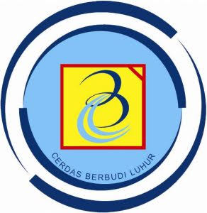

Perjalanan Saya
Riwayat pendidikan, bidang yang dipelajari, dan proyek kuliah

Mempelajari analisis dan perancangan sistem, pemrograman, basis data, serta pengolahan dan analisis data. Juga mengembangkan kemampuan dalam memahami kebutuhan pengguna dan merancang solusi berbasis teknologi informasi.
Lulusan SMA dengan jurusan IPA yang mempelajari konsep biologi, kimia, dan fisika secara komprehensif. Dengan pengalaman aktif di ekstrakurikuler PMR, yang melatih keterampilan dalam pertolongan pertama, serta terbiasa berkolaborasi dalam kegiatan sosial dan kemanusiaan.
Hasil belajar
Website CV responsif multi-halaman yang dibuat dengan HTML, CSS, dan Bootstrap 5.
Terlibat sebagai volunteer pada acara SI FEST di divisi Konsumsi serta PDD (Publikasi, Dokumentasi, dan Dekorasi). Bertanggung jawab menyiapkan dan mendistribusikan konsumsi, mengabadikan momen acara, dan mendukung kelancaran kegiatan bersama panitia lainnya.
Aktif berkolaborasi dalam tugas dan presentasi kelompok pada perkuliahan.